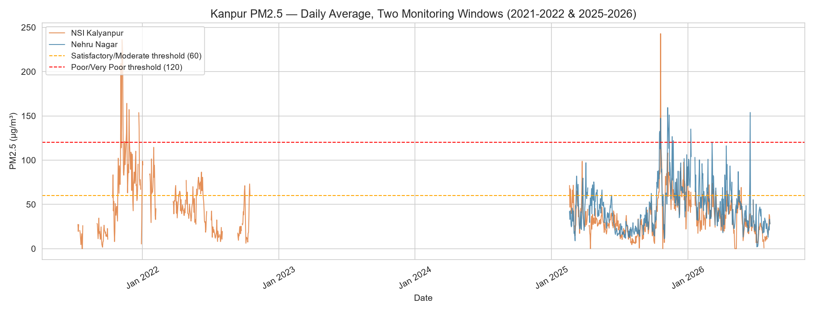

INVESTIGATION 01 · KANPUR, UP

Spatial Particulate Dynamics & Seasonal Multipliers in Kanpur
A comparative analysis of hourly PM2.5 and PM10 telemetry across NSI Kalyanpur and Nehru Nagar monitoring stations using CPCB/UPPCB records from OpenAQ, examining the five-fold winter surge, nocturnal boundary layer collapse, and weather correlations.